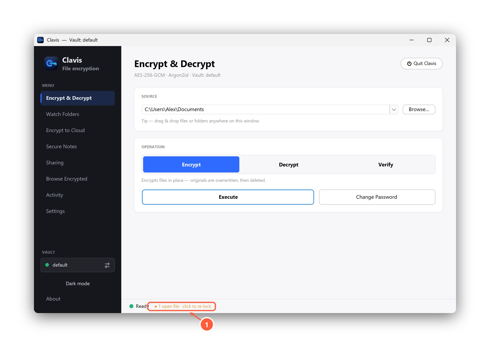
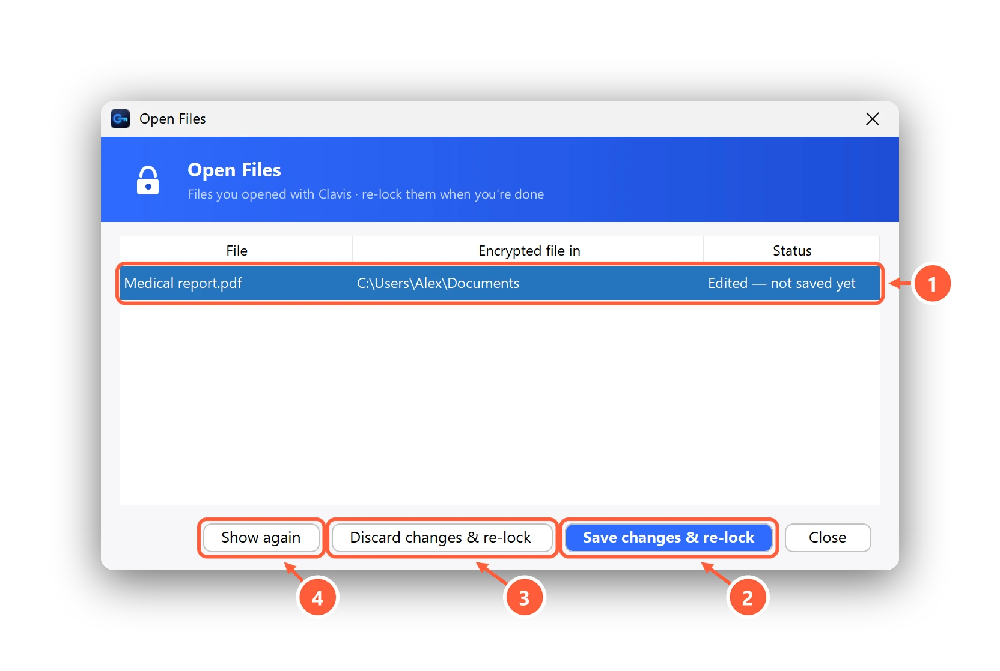

Open encrypted files without decrypting them
Usually you don't need to decrypt a file just to read or edit it. Open shows it in its usual app (Word, a PDF viewer, Photos…) from a temporary working copy, and puts it back under lock when you're done.
Open a file
Any of these works:
- Double-click the
.encfile in File Explorer. - Right-click it → Clavis → Open.
- In Browse Encrypted, select it and press Open.
While files are open, the status bar says so. Click it to manage them.

- Click to see open files and re-lock them
Save or discard, then re-lock

- Files you opened, and whether you edited them
- Put your edits back into the encrypted file
- Or throw the edits away
- Bring the file's window back
- Save changes & re-lock encrypts your edits back into the same
.encfile and wipes the working copy. With Premium, the version before your edit is kept in Previous versions. - Discard changes & re-lock (or Re-lock if you didn't edit) wipes the working copy and leaves the encrypted file as it was.
- Show again brings the file's window back.
Close the file in its app first. Save in Word (or whichever app), close it, then re-lock in Clavis.
If Clavis or your PC stops unexpectedly, Clavis cleans up any leftover working copies the next time it starts.
Can't find what you need? All help articles · Email us